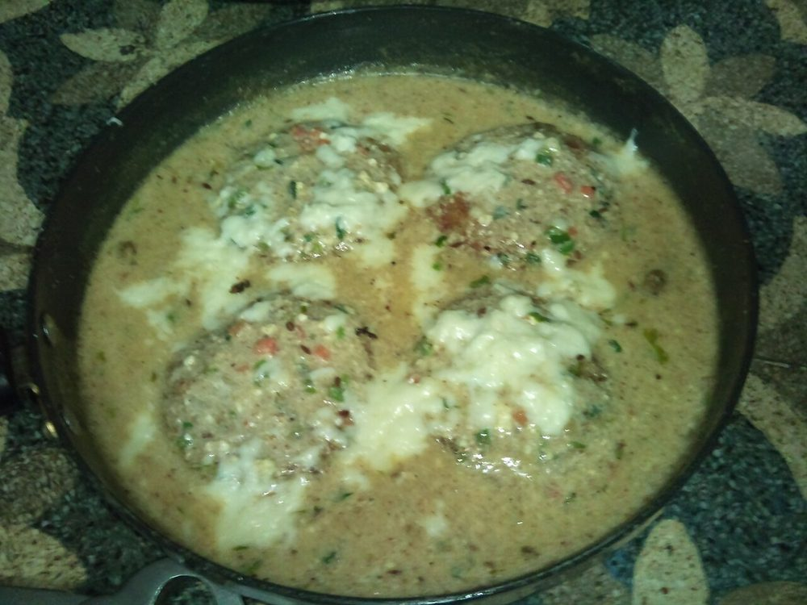

Contains: milk, gluten, tree nuts
Checked against the ingredient list for ten allergens: milk, egg, fish, crustaceans, tree nuts, peanuts, sesame, mustard, soy and gluten. Brands vary, so read the label on anything new to you.
Ingredients
Quantities for 4.
- 250g, grated Paneer
- 300g, boiled, cooled and grated Potatocooled and dry, or the koftas burst
- 3 tbsp Cornflour
- 1 tbsp Maida
- 50g, soaked Cashew
- 2 tbsp Raisinsoptional
- 2, quartered Onion
- 300g Tomato
- 80ml Cream
- 150ml Milk
- 1 tbsp Ginger
- 4 cloves Garlicoptional
- 4 Cardamom
- 1 tsp Garam Masala
- 1 tsp Sugar
- 500ml Neutral Oilfor deep frying
- to taste Salt
Cookware
stovetop, kadhai, blender
Before you start
- The potato must be boiled ahead and completely cold. Warm potato holds water and the koftas fall apart in the oil.
- Fry one kofta first as a test. If it breaks, work in another spoon of cornflour before frying the rest.
Method
- Mix the grated paneer and potato with the cornflour, maida and salt into a smooth, firm dough. Do not knead hard.
- Shape into 12 balls, pressing a few raisins and a piece of cashew into the centre of each.
- Heat the oil to 170C and fry the koftas in batches until pale gold, 3 minutes. Drain on paper.Pale gold, not brown. They fry again in the mouth of the gravy.
- For the gravy, simmer the onion, tomato, ginger, garlic, cardamom and soaked cashews in 200ml water for 15 minutes, then blend and sieve.
- Cook the puree in 2 tbsp of the frying oil for 8 minutes, add the milk, sugar and salt, and simmer to a pouring consistency.
- Stir in the cream and garam masala off the heat.
- Put the koftas in the serving dish and pour the hot gravy over them at the table.Never simmer the koftas in the gravy. They dissolve.
Storage
The koftas and gravy keep 2 days refrigerated but must be stored apart. Reheat the gravy and pour it over koftas warmed briefly in the oven.
Nutrition Good estimate
Medium protein: 19 g a serving, 11% of the calories
| Per serving387 g | Per 100 g | |
|---|---|---|
| Calories | 686 kcal | 178 kcal |
| Protein | 19.2 g | 5 g |
| Carbohydrate | 51.4 g | 13 g |
| of which sugars | 15.7 g | 4 g |
| Fibre | 4.7 g | 1 g |
| Fat | 46.5 g | 12 g |
| of which saturated | 16.2 g | 4 g |
| of which unsaturated | 25.9 g | 7 g |
Ingredients given to taste count as zero, so the real figures run a little higher. Nearest database match used for garam masala. Estimated from raw ingredients using USDA FoodData Central.
Times, yields, allergens and nutrition are guidance. Use your own judgement on doneness and on storing. More in About.